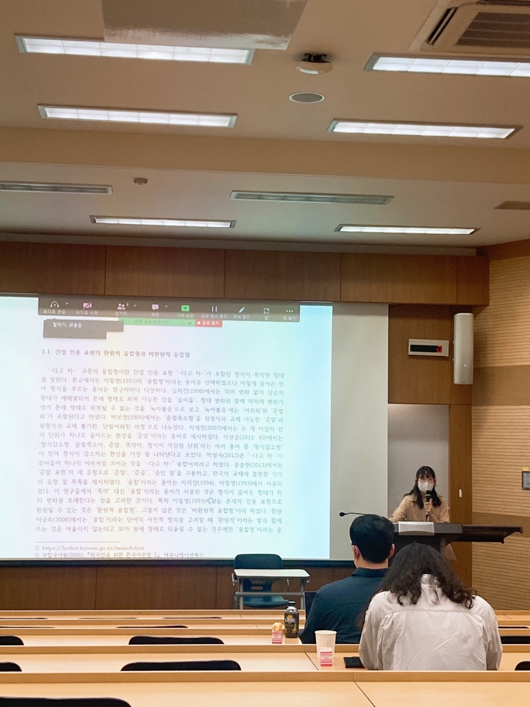

Welcome to SHURIMOO's Easy Korean!
Welcome to our website, where we aim to provide foreigners with an easy and friendly way to learn Korean. Every day, we will introduce one Korean word and its usage, as well as provide explanations for confusing grammar and helpful tips for learning the language. Join us on this exciting journey to discover the beauty of the Korean language!
Daily Word
오늘의 단어:
뜻:
예문:
Grammar Hacks
이제부터 '-ㄹ게' 쓸게!
- 이 노래는 정말 좋아서, 내일 학교 가기 싫을 정도로 들을게.
- 먼저 먹을 거리가 떨어지지 않게, 바로 먹을게요.
한국어에서 '-ㄹ게'는 행동의 의지나 결심을 나타내기 위해 사용되는 표현입니다. 자신이 할 행동을 확신하고 결심한 상태에서 사용됩니다. 비슷한 표현으로 '-을게'가 있는데, 이는 결정한 행동을 나타내기 보다는 약속한 내용을 표현할 때 사용됩니다.

Tips
Tips for Learning Korean
Immerse Yourself in the Language: Surround yourself with the language as much as possible. Watch Korean dramas, listen to K-pop, and read Korean books or websites.
Practice Daily: Consistent practice is key to improving your Korean language skills. Even just 10-15 minutes of practice every day can help you make progress.
Join a Korean Language Course: Joining a formal Korean language course can provide structure and accountability for your language learning journey.